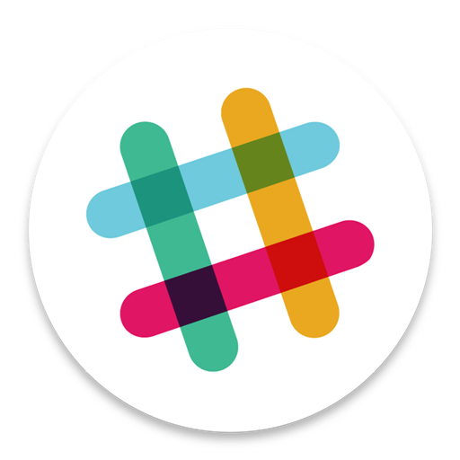
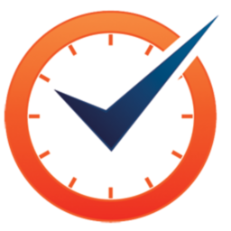

<section class="content">

  <div class="row">
    <div class="col-md-offset-2 col-md-8">
      <div class="box box-primary">
        <div class="box-header with-border">
          <h4 class="title">
            Connect the following integrations
          </h4>
        </div>
        <div class="box-body">
          <div class="btn-wrapper">
            <div>
              
              <app-slack-connect-button
                [connected]="currentUser.slackConnected"
                connectName="Connect"
                disconnectName="Disconnect">
              </app-slack-connect-button>
            </div>
            <div>
              
              <app-timedoctor-connect-button
                [connected]="currentUser.timedoctorConnected"
                connectName="Connect"
                disconnectName="Disconnect">
              </app-timedoctor-connect-button>
            </div>
              <button
                class="btn btn-primary btn-next"
                [disabled]="!currentUser.slackConnected"
                (click)="navigateToProfile()">
                Next
              </button>
          </div>
          <p class="text-center">
            If you <a routerLink="/profile">skip</a>
            you always can do it later in our profile on <b>Settings Tab</b>
          </p>
        </div>
        <!-- /.box-body -->
      </div>
    </div>
    <!-- /.col -->
  </div>
  <!-- /.row -->

</section>
